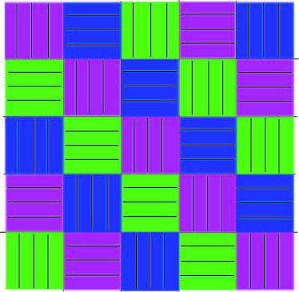

24-OCT-2016So the pattern itself is super simple, it's garter stitch, which means it's just straight knitting. Well, it means straight knitting for any normal knitter. I'm mildly ambidexterous, so when I was learning, I kinda mixed myself up. As a result, I don't turn my knitting the way everybody else does, I invert my wrong side rows. In the case of garter stitch patterns, where everybody would knit on the wrong side rows, I purl on the right side rows. I know that's kinda confusing, so I'll try to keep my explanations clear.
With that out of the way, back to my project. When everything is said and done, the arrangement of the squares will look something like this:
So my Square A alternates between 2 rows of dark purple, lilac, and red.
*PICS OF YARN BALLS*
Each square is 44 stitches wide, and I'm repeating the colour scheme (purple, lilac, red) 12 times. 12 repeats x 6 rows = 72 rows total per square.
*PICS OF SQUARES, IN PROGRESS AND COMPLETED*
All told, I'll need nine of these squares.